Candidate List 20261122Last night — ZTF: 2,076 passed basic cuts (57 young) · LSST: 0 passed basic cuts (0 young)Previous Day Next Day
Section 1: New Sources (age<1d) Section 2: Old (1-5d) sources observed last night Section 3: Already classified as a supernova on TNSplaceholder
Section 1: New Afterglow/FBOT Cands Last Night (0)
Section 2: Older Sources Observed Last Night (5)
1. [ZTF] ZTF26aciajxo (FBOT?) (TNS: AT 2026ajxu) [Back to Top] [Share] [Trigger Swift] [Fritz Alert] [Fritz Source] [Lasair]RA, Dec: 40.15348, 45.50657 2h40m36.84s, 45d30m23.65sGalactic (l, b): 142.20941, -13.23927 ext(g-r) = 0.113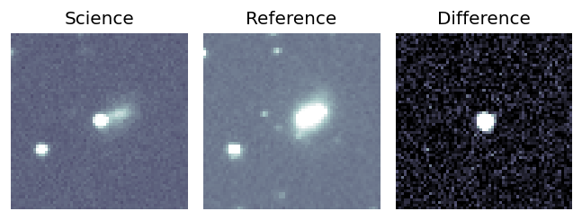


TESS: Sectors [58 85]
SDSS (<15 kpc):Found SDSS phot-z: z=0.05; peak abs mag = -20.10
NED host (10 arcsec):Found WISEA J024036.20+453025.5 (G, 6.9″); NED spec-z: z=0.0305 [zflag SUN]; peak abs mag = -18.87
PS1: 1 source in 3 arcsec Closest: d = 2.96 arcsec photoz=0.08+/-0.01 peak abs mag = -21.08
LegacySurvey: 0 sources in 3 arcsec

Extinction-corrected gr color:
From alerts: -0.14 +/- 0.03 mag
Rise Rate:
g: 0.38 mag/day
r: 0.35 mag/day
Fade Rate:
2. [ZTF] ZTF26aciblmb (Afterglow?) [Back to Top] [Share] [Trigger Swift] [Fritz Alert] [Fritz Source] [Lasair]RA, Dec: 120.17862, 19.62504 8h 0m42.87s, 19d37m30.13sGalactic (l, b): 202.16124, 23.74719 WARNING: -0.9 deg from ecliptic plane ext(g-r) = 0.042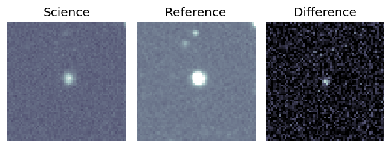


TESS: Sectors [44 45 46 71]
NED host (10 arcsec):Found WISEA J080042.80+193731.9 (G, 2.0″); NED spec-z: z=0.1193 [zflag SLS]; peak abs mag = -19.24
PS1: 0 sources in 3 arcsec
LegacySurvey: 1 sources in 3 arcsec Closest: d = 1.48 arcsec, 263.2 deg (east of north) photoz=0.11 (68% bounds 0.08, 0.21), type=SER peak abs mag (ext. corrected) = -19.05 (68% bounds -18.3, -20.63)

Extinction-corrected gr color:
From alerts: -0.03 +/- 0.19 mag
Extinction-corrected gi color:
From alerts: -0.25 +/- 0.23 mag
Extinction-corrected ri color:
From alerts: -0.22 +/- 0.24 mag
Consistent with synchrotron, g-r>0!
Rise Rate:
g: 0.08 mag/day
r: 0.85 mag/day
i: 0.22 mag/day
Fade Rate:
3. [ZTF] ZTF26acibnoy (FBOT?) [Back to Top] [Share] [Trigger Swift] [Fritz Alert] [Fritz Source] [Lasair]RA, Dec: 126.78837, 32.45843 8h27m9.21s, 32d27m30.36sGalactic (l, b): 190.29735, 33.31969 ext(g-r) = 0.044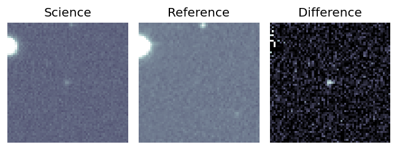
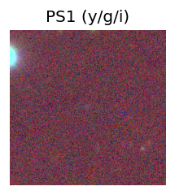
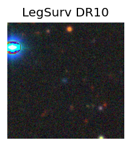
TESS: Sectors 47
SDSS (<15 kpc):Found SDSS phot-z: z=0.77; peak abs mag = -24.04
PS1: 0 sources in 3 arcsec
LegacySurvey: 1 sources in 3 arcsec Closest: d = 0.76 arcsec, 100.4 deg (east of north) photoz=0.02 (68% bounds 0.01, 0.05), type=EXP peak abs mag (ext. corrected) = -14.97 (68% bounds -13.65, -17.4)
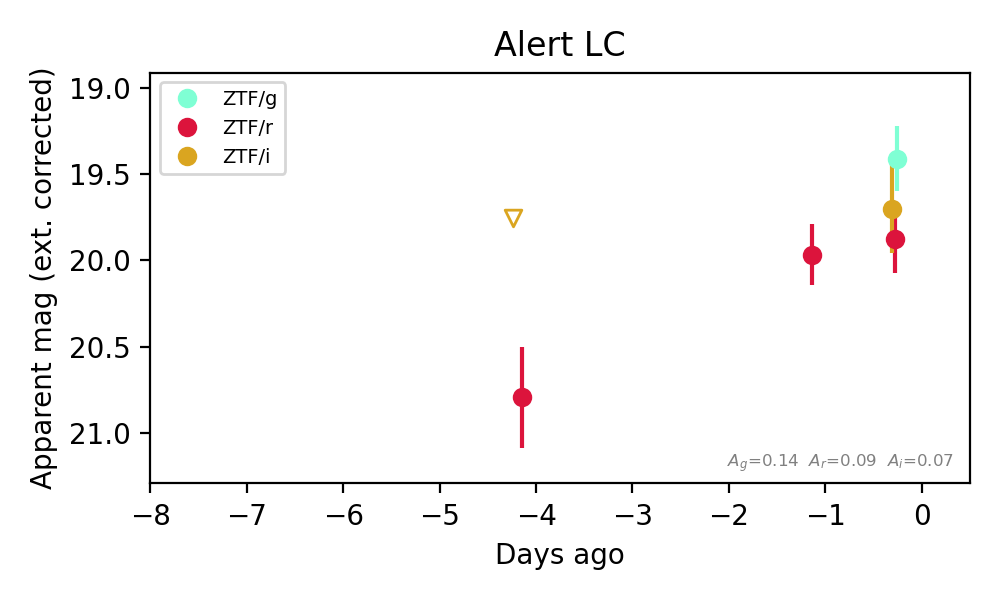
Extinction-corrected gr color:
From alerts: -0.47 +/- 0.27 mag
Extinction-corrected gi color:
From alerts: -0.29 +/- 0.32 mag
Extinction-corrected ri color:
From alerts: 0.18 +/- 0.32 mag
Consistent with synchrotron, g-r>0!
Rise Rate:
g: 0.1 mag/day
r: 0.24 mag/day
Fade Rate:
4. [ZTF] ZTF26acibusc (Afterglow?) [Back to Top] [Share] [Trigger Swift] [Fritz Alert] [Fritz Source] [Lasair]RA, Dec: 20.6273, 43.61426 1h22m30.55s, 43d36m51.34sGalactic (l, b): 128.86871, -18.89903 ext(g-r) = 0.065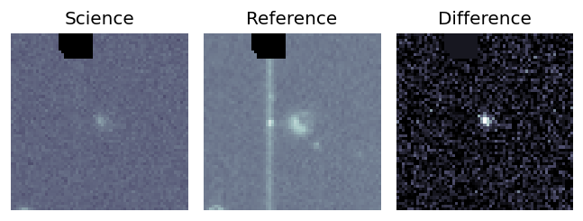
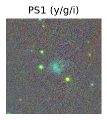
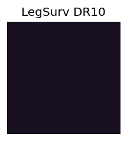
TESS: Sectors [17 58 85]
SDSS (<15 kpc):Found SDSS phot-z: z=0.09; peak abs mag = -18.73
PS1: 1 source in 3 arcsec Closest: d = 0.38 arcsec photoz=0.06+/-0.04 peak abs mag = -17.92
LegacySurvey: 0 sources in 3 arcsec
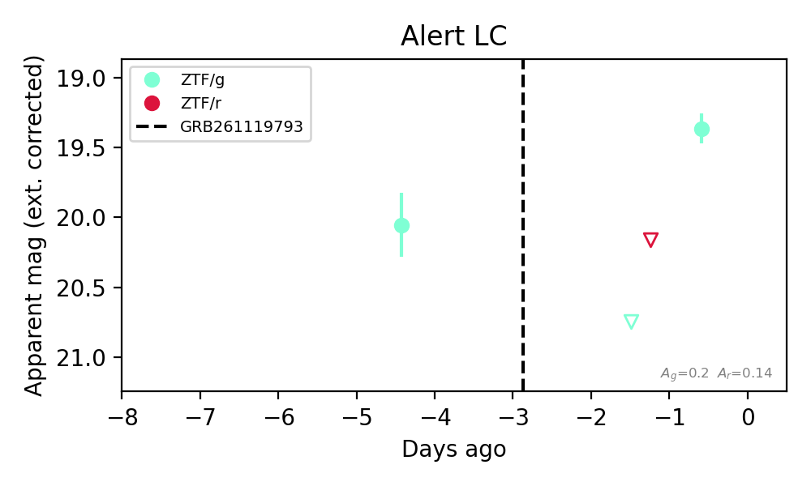
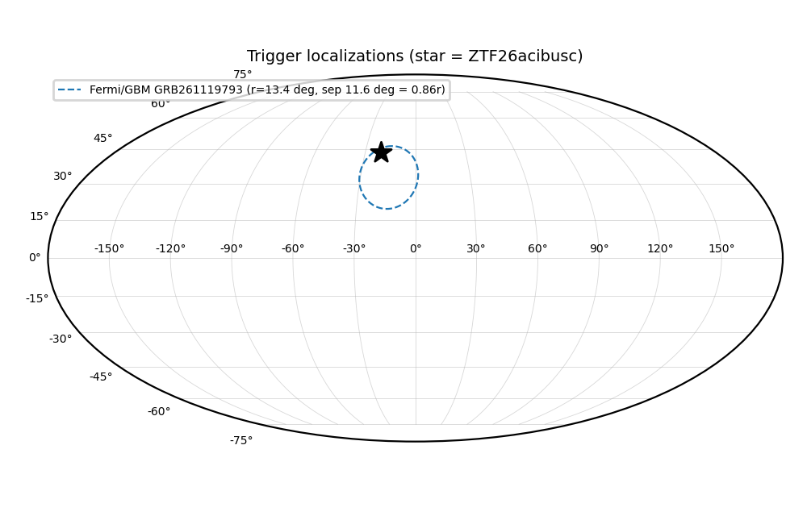
Rise Rate:
g: 1.53 mag/day
Fade Rate:
g: 0.24 mag/day
5. [ZTF] ZTF26acibzya (FBOT?) [Back to Top] [Share] [Trigger Swift] [Fritz Alert] [Fritz Source] [Lasair]RA, Dec: 356.0158, -6.80352 23h44m3.79s, -6d-48m-12.68sGalactic (l, b): 81.66746, -64.13527 WARNING: -4.66 deg from ecliptic plane ext(g-r) = 0.027

TESS: Sectors [42 70 92]
SDSS (<15 kpc):Found SDSS phot-z: z=0.46; peak abs mag = -23.59
PS1: 0 sources in 3 arcsec
LegacySurvey: 1 sources in 3 arcsec Closest: d = 2.35 arcsec, 261.8 deg (east of north) photoz=0.09 (68% bounds 0.05, 0.11), type=EXP peak abs mag (ext. corrected) = -19.59 (68% bounds -18.45, -20.14)
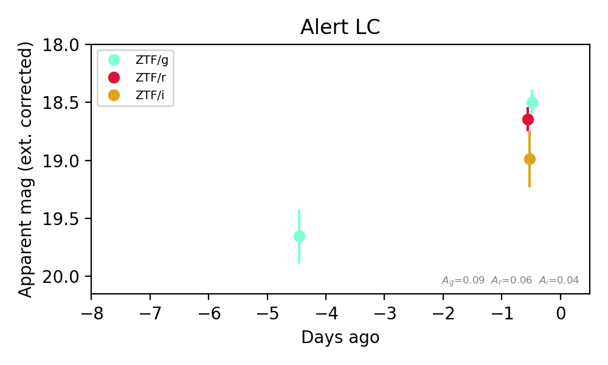
Extinction-corrected gr color:
From alerts: -0.15 +/- 0.15 mag
Extinction-corrected gi color:
From alerts: -0.49 +/- 0.27 mag
Extinction-corrected ri color:
From alerts: -0.34 +/- 0.27 mag
Rise Rate:
g: 0.29 mag/day
r: 0.11 mag/day
i: 0.04 mag/day
Fade Rate:
Section 3: Already classified as a supernova on TNS (0)